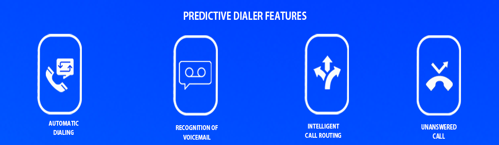

To improve efficiency, a call center predictive dialer may drastically reduce the time it takes an employee to complete a call. Predictive dialers may assist you in gathering useful information quickly and helping you make decisions, whether you run a small business or a huge corporation.
Learn more about predictive dialing and the advantages it may provide for your contact center.
What is Predictive Dialer?
providing the introduction of a predictive dialer, call center service providers can make more calls without having to deal with the annoyance of busy lines. Only calls that are answered by people not computers are connected by the auto-dialer. As a result, employees engage more with consumers and complete the campaigns faster. A predictive dialer's basic objective is to provide a constant supply of incoming calls. By automatically calling and transferring calls to the available agents, it does that.
How does a predictive dialer work?
The program uses a formula based on several call features to calculate how long each agent will take to complete a conversation and their availability. The predictive dialer then makes multiple calls to many numbers. Only live audiences will be connected by your agency. because of the predictive dialer system's ability to identify between unanswered calls, dropped calls, and answering machines.
Here’s a general overview of how a dialer works:
- You need to import a list of phone numbers for your campaign to get started.
- Data of the call center is processed by the dialer's software. number of agents on hand, the typical call duration, and the projected amount of successful calls.
- The dialer projects the number of calls that are likely to be answered based on the analysis. Then it together contacts a number of phone numbers from the list.
- It filters out unwanted busy lines, voicemails, and answering machines.
- The dialer connects an available agent to the caller as soon as a live person answers the phone.
A predictive dialer program's overall goal is to improve the effectiveness of your outbound calling efforts. It works best for obtaining client feedback and increases agent efficiency while exposing you to a wide audience.

Call center predictive dialer features you should consider for your business
You should carefully assess the dialer and its capabilities while looking for a predictive dialer that is suitable for your call center. To run a smooth and effective call center, make sure the predictive dialer has the following features.
- Automatic dialing : A predictive dialer at a call center will automatically contact the numbers on an approved list. The agent can concentrate on other activities as this capability frees up their time. The agent may relax and watch as the system automatically calls the next individual rather than manually dialing each number, which frequently results in mistakes.
When choosing if you want to answer the next call, the predictive dialer applies an algorithm. According to the algorithm, it calls the subsequent number to ensure that an agent is always needed for a call that has come in.
- Recognition of voicemail or answering machine : An answering machine or voicemail can be noticed by a call center predictive dialer. These calls are automatically terminated by the dialer, but they are saved for a next attempt.
- Intelligent call routing : Additionally, the predictive dialing program is to provide intelligent call routing and automated call distribution. The predictive dialer should automatically allocate calls to agents according to their availabilities, credentials, and other factors.
- Unanswered call : Your calling process can function as effectively as possible if the withdrawal rate is kept as low as possible. Improper dialing settings is the cause of every dropped call, which your predictive dialer should automatically fix.
- IVR integration : To direct the audience to the most qualified agent and collect data from responders, you should be able to combine the predictive dialer with an IVR. Ask call receivers questions using an interactive voice response system, and then connect them with the best agent or resource based on their answers.
The advantages of call center predictive dialer
The effectiveness and time management of predictive dialer software is the reason for its popularity. However, the dialer is used widely due to a number of additional benefits. The following are the top 5 benefits of predictive dialer for call centers
- Increase efficiency : A regular flow of calls is given to the agents by the predictive dialing program. This makes sure they talk to and interact with consumers more. Less time is spent waiting between calls or being distracted as a result. As a result of their effective operation, conversions, subscriptions, and collections rise.
- Cut down on frustration : A predictive dialer can get clear of calls that wind up on an answering machine or with a busy signal. Intelligent call routing ensures that the calls never reach an agent, which lessens their annoyance. Agents who are happier may focus entirely on the current engagement, providing better service.
- Attempts to control contact : You can live by the legal requirements that are relevant to your company thanks to the built-in contact limits provided by predictive dialing software. Those that control, for instance, the number of contact tries and the permissible hours of the day.
- Lower costs : If your business depends on its agents reaching out to as many clients as they can in the quickest period of time, predictive dialing software is your best bet. Making more connections in less time leads in a lower cost per contact.
- Highly customizable : Predictive dialing has a number of drawbacks, one of which being the possibility of calls being lost if a live person is called before an agent is available. As a result, precision is crucial for the successful application of predictive dialing.
Frequently Asked Questions (FAQs)
Predictive dialers boost agent productivity by minimizing manual dialing, ensuring more live conversations.
Yes, modern predictive dialers come with compliance features to adhere to regulations like the National Do Not Call Registry.
The future likely involves AI-driven advancements, offering deeper insights and more accurate call predictions.